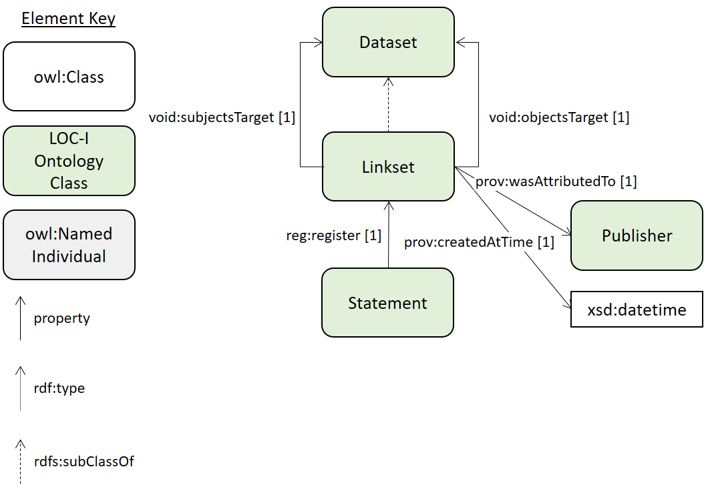

{kind=link}
Classes
LOCI Data Publishersc back to ToC or Class ToC
IRI: http://linked.data.gov.au/def/loci#DataPublisher
- is equivalent to
- { CSIRO , Geoscience Australia , Australian Bureau of Statistics , PSMA Australia }
- has super-classes
- group
- is also defined as
- named individual
LOCI Datasetc back to ToC or Class ToC
IRI: http://linked.data.gov.au/def/loci#Dataset
- is equivalent to
- publisher only LOCI Data Publishers c
- has super-classes
- issued exactly 1 date
- modified exactly 1 date
- title exactly 1 string
- dataset
- dataset
- contact point min 1
- publisher exactly 1 organization
- has sub-classes
- LOCI Linkset c
- has members
- ASGS Dataset ni, Geofabric Dataset ni, GNAF Dataset ni
LOCI Dataset Linking Statementc back to ToC or Class ToC

Figure 3: The statement class with object properties shown.
IRI: http://linked.data.gov.au/def/loci#DatasetLinkingStatement
An RDF Statement (Subject, Predicate, Object + additional metadata) that links class instances in one LOCI Dataset with class instances in another
- has super-classes
- statement c
- had generation method op exactly 1 plan c
- register exactly 1 LOCI Linkset c
- object exactly 1 LOCI Feature c
- subject exactly 1 LOCI Feature c
LOCI Featurec back to ToC or Class ToC
IRI: http://linked.data.gov.au/def/loci#Feature
- has super-classes
- feature c
LOCI Linksetc back to ToC or Class ToC

{kind=link}
Figure 2: The Linkset class with object properties shown.
IRI: http://linked.data.gov.au/def/loci#Linkset
A LOCI Linkset is a specialised form of a VOID Linkset that requires the void:subjectsTarget & void:objectsTarget indicate LOCI Datasets
- is equivalent to
- objects target op only LOCI Dataset c
- subjects target op only LOCI Dataset c
- has super-classes
- LOCI Dataset c
- linkset
- has members
- Addresses Catchments Linkset ni
A LOCI Dataset is a DCAT and VOID Dataset that has been accepted by the LOCI Registry Manager.